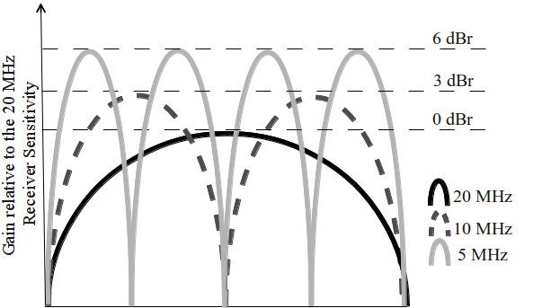
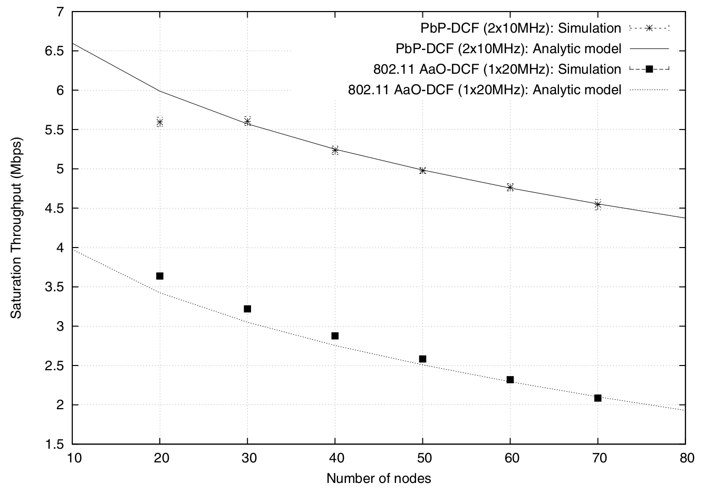
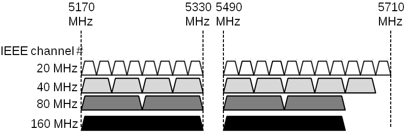
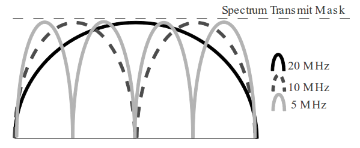

"Implementação e avaliação de desempenho do protocolo PbP-DCF para WLANs com largura adaptativa de canais
Trabalho de Conclusão de Curso
Gabriel B. Casella
Introdução
WLAN facilmente conecta vários dispositivos
Fácil conexão com a internet
Web-rich applications
Cloud Computing
HD Video Streaming
Games
Então, como todos os dispositivos se comunicam?
IEEE 802.11
IEEE 802.11 ac
54Mbps x 1Gbps
Velocidades Gpbs (Será?)
Velocidades Gpbs (Será?)
All-at-Once (AaO)
Maior número de portadoras = Maior fluxo de dados

Porém, elevado SNR
E alto custo de hardware
PbP-DCF
Explora um canal de largura fixa
Menor fluxo de dados
Maior número de transmissões
Baseado no CSMA/CA
PbP-DCF vs AaO-DCF

Como simular outros cenários?
Como simular outros cenários?
Simulação analítica:
É complexa;
Incorpora menos detalhes e mais suposições(JAIN, 1991).
Simulador de rede:
Implementa todos os protocolos IEEE 802.11;
Provê ambiente facilmente escalável;
Porém, PbP-DCF não existe no simulador!
Objetivo
O objetivo deste trabalho consiste em implementar o PbP-DCF e comparar seu desempenho com o Carrier Sense Multiple Access/Collision Avoidance (CSMA/CA) sob variados padrões de mobilidade e tráfego
Justificativa
Prover um cenário nos quais os parâmetros de simulação podem ser ajustados de maneira simples, i.e. mobilidade dos nós e carga da rede, além de obter resultados mais próximos da realidade.
Trabalhos Relacionados
Paradigma All-at-Once;
Transmissões em canais de largura variáveis;
O paradigma Piece-by-Piece;
O protocolo PbP-DCF
Paradigma AaO
Necessidade de MAC com largura de canais dinâmicos;
Chandra et al. (2008)
Desempenho 65% superior
IEEE 802.11ac

Transmissões em canais de largura variáveis
Canal largo = Mais dados -> Maior SNR(PARK, 2011; CHANDRA et al., 2008)
Muitos dispositivos + interferências -> Canal estreito (GUMMADI et al., 2007)
dBm
MHz
Mbps
-82
1 x 202 x 10
1 x 62 x 6
-77
1 x 202 x 10
1 x 182 x 12
-66
1 x 202 x 10
1 x 482 x 27
O paradigma PbP
Como solucionar o problema de alocação de canais largos?
Piece-by-Piece (QUEIROZ, 2013)
Acesso a canal primário
Acesso posterior, e sequencial, a canais secundários
O protocolo PbP-DCF (QUEIROZ, 2013)

Divisão do canal mais largo em N canais menores
Canal primário = CSMA/CA
Canal secundário sem disputa se livre por PIFS;
Channel Negotiation Bit (CNB)
Os resultados do PbP-DCF
O desempenho é superior;
Apenas 1 ambiente simulado!
NS-3
Simulação matemática é atualmente complexa para redes;
Facilitar a implementação e avaliação de desempenho
Implementação integral do IEEE 802.11
Variação no modelo de mobilidade e padrões de tráfego
Implementação do protocolo
Estudo e extensão do IEEE 802.11
Análise de Desempenho
PbP-DCF x AaO-DCF (CSMA/CA)
Diferentes cenários
Referências
BALDO, N. et al. Validation of the ns-3 ieee 802.11 model using the extreme testbed.
In: Proceedings of SIMUTools Conference, 2010. [S.l.: s.n.], 2010. 13
CHANDRA, R. et al. A case for adapting channel width in wireless networks.
SIGCOMM Comput. Commun. Rev., ACM, New York, NY, USA, v. 38, n. 4, p. 135–146,
ago. 2008. ISSN 0146-4833. Disponível em: . 8
COMBS, G. Wireshark. 2010. Disponível em: . Acesso
em: 12 fev. 2014. 12
GLOMOSIM. GloMoSiM - Global Mobile Information Systems Simulation Library.
1995. Disponível em: . Acesso em: 12 fev.
2014. 12
GUMMADI, R. et al. Understanding and mitigating the impact of rf interference
on 802.11 networks. SIGCOMM Comput. Commun. Rev., ACM, New York, NY,
USA, v. 37, n. 4, p. 385–396, ago. 2007. ISSN 0146-4833. Disponível em:
. 10
Referências
IEEE Standard for Information technology. Ieee draft standard for it - telecommunica-
tions and information exchange between systems - lan/man - specific requirements -
part 11: Wireless lan medium access control and physical layer specifications - amd
4: Enhancements for very high throughput for operation in bands below 6ghz. IEEE
P802.11ac/D3.0, June 2012, p. 1–385, July 2012. 8
IEEE Standard for Information technology. Part 11: Wireless LAN Medium Access
Control (MAC) and Physical Layer (PHY) Specifications. 2012. 4, 8, 9, 11
JAIN, R. The art of computer systems performance analysis. [S.l.]: John Wiley & Sons
Chichester, 1991. 6
KHAN, A. ur R.; BILAL, S. M.; OTHMAN, M. A performance comparison of network
simulators for wireless networks. CoRR, abs/1307.4129, 2013. 12
Referências
MOSCIBRODA, T. et al. Load-aware spectrum distribution in wireless lans. In: Network
Protocols, 2008. ICNP 2008. IEEE International Conference on. [S.l.: s.n.], 2008. p.
137–146. ISSN 1092-1648. 10
NS-2. Network Simulator-2 is an open source, discrete event network simulator. 1997.
Disponível em: . Acesso
em: 21 nov. 2013. 12
NS-3. NS-3 is a discrete-event network simulator for Internet systems, targeted
primarily for research and educational use. 2006. Disponível em: . Acesso em: 11 nov. 2013. 11, 12, 13
Referências
PARK, M. Ieee 802.11ac: Dynamic bandwidth channel access. In: Communications
(ICC), 2011 IEEE International Conference on. [S.l.: s.n.], 2011. p. 1–5. ISSN
1550-3607. 8QUEIROZ, S. All-at-once or piece-by-piece: How to access wide channels in
wlans with channel width diversity? Communications Letters, IEEE, v. 17, n. 11, p.
2188–2191, November 2013. ISSN 1089-7798. 6, 9, 10, 11, 12
VARGA, A. OMNeT++ is a discrete event simulation environment. 2007. Disponível
em: . Acesso em: 12 fev. 2014. 12
WEINGARTNER, E.; LEHN, H. vom; WEHRLE, K. A performance comparison of
recent network simulators. In: Communications, 2009. ICC ’09. IEEE International
Conference on. [S.l.: s.n.], 2009. p. 1–5. ISSN 1938-1883. 12